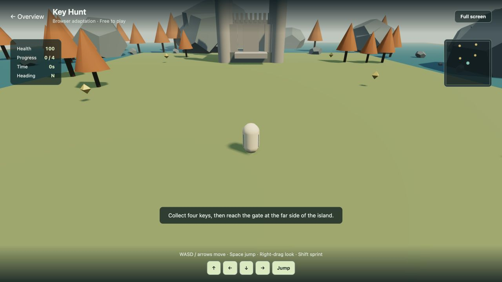

Island navigation
Movement and viewpoint work together to make the space readable. The player uses the controls to choose a route, judge distance, and position the character for the next interaction.
Unreal Engine
Explore an island, search for keys, and find a route to the central tower before time runs out.


Movement and viewpoint work together to make the space readable. The player uses the controls to choose a route, judge distance, and position the character for the next interaction.
Collectible objects connect exploration with measurable progress. Finding them gives the player a reason to examine the space and confirms that a route or objective has been completed.
Time provides an additional constraint or performance measure. It gives a compact activity a clear pace and makes the result of a run easier to compare.
Collect four keys, then reach the gate at the far side of the island. Independent browser adaptation of the project concept, built with JavaScript and WebGL. This is not a packaged Unreal Engine build.
WASD / arrows move · Space jump · Right-drag look · Shift sprint
Project reference preview; recovered build not verified.